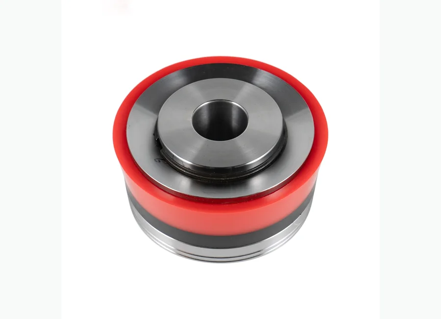
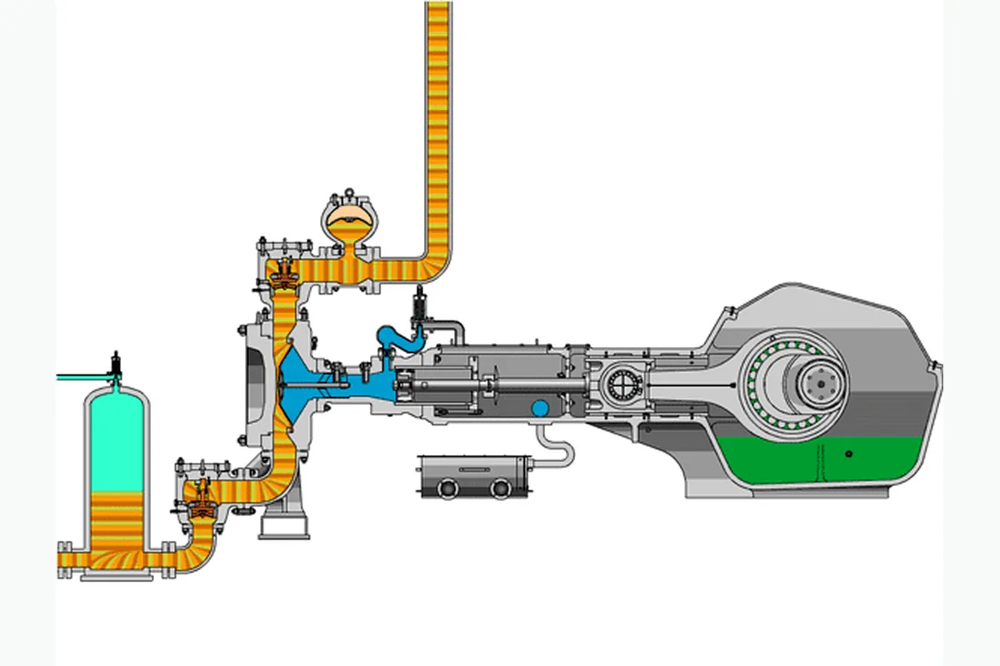

Как запросить цену
- Отправьте номер детали или модель оборудования.
- Можно приложить фото продукта или технический чертеж.
- Мы проверим совместимость и подготовим предложение.
Буровые насосы и запасные части
буровых насосов серии BOMCO F. Поставка для буровых, ремонтных и нефтесервисных проектов в Казахстане и странах Центральной Азии.

Используется для нефтепромыслового оборудования, буровых установок, насосных систем, устьевых операций, тормозных и гидравлических узлов в зависимости от категории продукта.
Подбор спецификации, экспортная упаковка, коммуникация на русском языке, WhatsApp и email поддержка для покупателей Центральной Азии.
Описание
Изображения с пометкой «добавить в описание» размещены здесь, а не используются как главная фотография товара.

Модели и спецификации
Если в исходной папке есть таблица с моделями, она отображается здесь для удобства подбора и запроса цены.
| F500 F-800/F1000 F-1300/1600 Запчасти к буровым насосам | |||||||
|---|---|---|---|---|---|---|---|
| Наименование | Старая модель | Модель | Старая модель | Модель | Старая модель | Модель | |
| F1300/F1600 | F-1300/F1600 | F-800/F1000 | F-800/F1000 | F-500 | F-500 | ||
| Коленчатый сборки | AH36002-02.00 | AH1301020200 | AH1001010200 | AH33001-02.00 | AH0801010200 | AH0501010200 | |
| AH37002-01.00 | AH1601020100 | AH1001010200 | AH33001-02.00 | AH0801010200 | AH0501010200 | ||
| Шестерня вал в сборе | AH36002-03.00 | AH1301020300 | AH1001010300 | AH33001-03.00 | AH0801010300 | AH34001-03.0 | |
| AH37002-02.00 | AH1601020200 | AH0801010300 | AH34001-03.0 | AH0501010300 | AH35001-03.00 | ||
| Ползун Головной блок | AH36002-04.00 | AH1301020400 | AH1001010400 | AH33001-04.00 | AH0801010400 | AH34001-04.00 | |
| Гидравлический конец сборки | AH36002-05.00 | AH1301020500 | AH1001010500 | AH1001011100 | AH0801010500 | AH34001-05.00 | |
| Торцевая крышка основного подшипника | AH36001-02.01C.00 | AH130101020100 | AH100101020100 | AH33001-02.01C.00 | AH080101020100 | AH34001-02.01C.00 | |
| Виулка основного подшипника (право) | AH36002-02.01 | AH1301020201 | AH1001010202 | AH33001-02.02 | AH0801010202 | AH34001-02.02 | |
| AH37002-01.01 | AH1601020101 | ||||||
| Шайба уплотнения | AH36001-02.03 | AH1301010203 | AH1001010203 | AH33001-02.03 | AH0801010203 | AH34001-02.03 | |
| Внутреннее стопорное кольцо | AH36001-02.04 | AH1301010204 | AH1001010204 | AH33001-02.04 | AH0801010204 | AH34001-02.04A | |
| Наружное стопорное кольцо | AH36001-02.05 | AH130101020500 | AH100101020500 | AH33001-02.05.00 | AH080101020500 | AH34001-02.05.00 | |
| AH37001-01.03 | AH160101010200 | ||||||
| Стержень соединения | AH36002-02.02 | AH1301020202 | AH1001010206 | AH33001-02.06 | AH0801010206 | AH34007-02.02 | |
| AH37002-01.02 | AH1601020102 | ||||||
| Установочное кольцо | AH36002-02.03 | AH1301020203 | AH1001010207 | AH33001-02.07 | AH0801010207 | AH34007-02.03 | |
| Большой зубчатый венец | AH36002-02.04A.00 | AH130102020400 | AH1001010219 | AH33001-02.10A | AH0801010210 | AH34001-02.11A | |
| Распорка | AH36001-02.12 | AH1301010211 | AH1001010211 | AH33001-02.13 | AH0801010211 | AH34001-01.13 | |
| Втулка основного подшипника (налево) | AH36002-02.06 | AH1301020206 | AH34001-01.13 | AH33001-02.14 | AH0801010213 | AH34001-02.16 | |
| AH37002-01.03 | AH1601020103 | ||||||
| Стопорное кольцо | AH36001-02.14 | AH1301010213 | AH1001010213 | AH33001-02.15 | AH0801010214 | AH34001-02.17 | |
| AH37001-01.07 | AH1601010106 | ||||||
| Вассал | AH36001-02.15 | AH1301010214 | AH1001010214 | AH33001-02.17 | AH0801010215 | AH34001-02.18 | |
| Болт основного подшипника | AH36001-02.16C | AH1301010215 | AH1001010215 | AH33009-02.08 | AH0801020206 | AH34007-02.07 | |
| Прокладка | AH36001-02.17 | AH130101021600 | AH100101021600 | AH33001-02.20.00 | AH080101021200 | AH34001-02.15.00 | |
| Подшипник эксцентрика колеса | AH36001-02.19.00 | AH1301010217 | AH1001010217 | AH33001-02.22 | AH0801010216 | AH34001-02.19 | |
| AH37001-01.08.00 | AH1601010107 | ||||||
| Основной подшипник | AH36001-02.20.00 | AH1301010218 | AH1001010215 | AH33009-02.08 | AH0801020206 | AH34007-02.07 | |
| AH37001-01.09.00 | AH1601010108 | ||||||
| Шайба | 4.205010361602e+17 | 4.205010361602e+17 | AH1001010211 | AH33001-02.13 | AH0801010211 | AH34001-01.13 | |
| Большой зубчатый венец (соединить) | AH36001-02.10B.00 | AH130101021900 | AH1001010219 | AH33001-02.10A | AH0801010210 | AH34001-02.11A | |
| AH37001-01.05B.00 | AH160101010900 | ||||||
| Ключ | AH36002-03.01 | AH1301020301 | AH1001010301 | AH33001-03.01 | AH0801010301 | AH34001-03.01 | |
| Вал шестерни | AH36002-03.02 | AH1301020302 | AH1001010302 | AH33001-03.02A | AH0801010302 | AH34001-03.02A | |
| AH37002-02.01 | AH1601020201 | ||||||
| Втулка износа | AH36001-03.03 | AH1301010303 | AH1001010303 | AH33001-03.03 | AH0801010303 | AH34001-03.03 | |
| Торцевая крышка | AH36002-03.03B | AH1301020303 | AH1001010304 | AH33001-03.04B | AH0801010304 | AH34001-03.04B | |
| Шайба упротнения | AH36001-03.05 | AH1301010305 | AH1001010309 | AH33001-03.09B | AH0801010309 | AH34001-03.09B | |
| Шайба упротнения | AH36001-03.06 | AH1301010306 | AH1001010306 | AH33001-03.06 | AH0801010306 | AH34001-03.06 | |
| Втулка подшипника | AH36001-03.07B | AH1301010307 | AH1001010307 | AH33001-03.07B | AH0801010307 | AH34001-03.07B | |
| Стопорное кольцо | AH36002-03.05B | AH1301020305 | AH1001010308 | AH33001-03.08B | AH0801010308 | AH34001-03.08B | |
| Шайба упротнения | AH36001-03.12B | AH1301010309 | AH1001010309 | AH33001-03.09B | AH0801010309 | AH34001-03.09B | |
| Коробка масла сбора | AH36001-03.13B.00 | AH130101031000 | AH10010103000 | AH33001-03.13B.00 | AH080101031000 | AH34001-03.13B.00 | |
| Масляное уплотнение | AH36001-03.08A | AH1301010311 | AH36001-03.08A | AH1301010311 | AH36001-03.08A | AH1301010311 | |
| Подшипник | AH36001-03.09 | AH1301010312 | AH1001010312 | AH33001-03.12 | AH0801010312 | AH34001-03.11 | |
| Головной блок | AH36002-04.01 | AH1301020401 | AH1001010401 | AH33001-04.01 | AH0801010401 | AH34001-04.01 | |
| Верхняя направляющая пластина | AH36001-04.02 | AH1301010402 | AH1001010402 | AH33001-04.02 | AH0801010402 | AH34001-04.02 | |
| Прокладка | AH36001-04.03A.00 | AH100101041700 | AH100101041700 | AH36001-04.03A.00 | AH100101041700 | AH36001-04.03A | |
| Шайба регулировки | AH36001-04.04 | AH1301010403 | AH1001010418 | AH33001-04.25A | AH08010118 | AH34001-20 | |
| Упаковочная коробка | AH36001-04.05 | AH1301010404 | AH1001010403 | AH33001-04.04 | AH0801010403 | AH34001-04.04 | |
| Масляное уплотнение кольцо | AH36001-04.21 | AH1301010405 | AH1001010404 | AH33001-04.06A | AH0801010404 | AH34001-04.06A | |
| O-кольцо | 5.30301011900035e+17 | 5.30301011900035e+17 | 530301011750035000 | GB3452.1-82 | 530301011600035000 | GB3452.1-82 | |
| Двойное масляное уплотнение | AH36001-04.08A | AH1301010406 | AH1001010416 | AH33001-04.24A | AH0801010414 | AH34001-04.23A | |
| Запорная пружина | AH36001-04.13 | AH1301010407 | AH1001010411 | AH33001-04.16 | AH0801010410 | AH34001-04.15 | |
| Брызговик | AH36001-04.10 | AH1301010408 | AH1001010406 | AH33001-04.08 | AH0801010405 | AH34001-04.07 | |
| Удлинитель стержня | AH36001-04.11 | AH1301010409 | AH1001010407 | AH33001-04.09 | AH0801010406 | AH34001-04.08 | |
| Палец крейцкопфа | AH36002-04.03 | AH1301020403 | AH1001010408 | AH33001-04.10 | AH0801010407 | AH34001-04.09 | |
| O-кольцо | 5.3030101125007e+17 | 5.3030101125007e+17 | 530301011750035000 | GB3452.1-82 | 530301011150053000 | GB3452.1-82 | |
| Прокладка уплотнения | AH36001-04.15 | AH1301010411 | AH1001010413 | AH33001-04.20 | AH0801010411 | AH34001-04.19 | |
| O-кольцо | 5.3030101160007e+17 | 5.3030101160007e+17 | 530301011600035000 | GB3452.1-82 | 530301011280070000 | GB3452.1-82 | |
| Нижняя направляющая пластина | AH36001-04.17 | AH1301010412 | AH1001010409 | AH33001-04.12 | AH0801010408 | AH34001-04.11 | |
| Крестовой направляющий штифт | AH36002-04.04 | AH1301020404 | AH1001010414 | AH33001-04.21 | AH0801010412 | AH34001-04.20 | |
| Подшипник головного блока | AH36001-04.19 | AH1301010414 | AH1001010415 | AH33001-04.22 | AH0801010413 | AH34001-04.21 | |
| Гидравлический цилиндр в сборе | AH36002-05.01.00 | AH130102050100 | AH100101050100 | AH33001-05.01A.00 | AH050101050100 | AH35001-05.01A.00 | |
| Фланец крышки цилиндра | AH36001-05.02 | AH1301010502 | AH1001010502 | AH33001-05.02 | AH0501010502 | AH35001-05.02 | |
| Крышка цилиндра | AH36001-05.03 | AH1301010503 | AH1001010503 | AH33001-05.03A | AH0501010503 | AH35001-05.03A | |
| Доска штепсельной вилки в сборе | AH36001-05A.04.00 | AH130101050400 | AH36001-05A.04.00 | AH130101050400 | AH36001-05A.04.00 | AH130101050400 | |
| Направляющая стержень клапана (нижний) | AH36001-05A.05.00 | AH130101050500 | AH100101052200 | AH33001-05.31.00 | AH050101051800 | AH35001-05.24.00 | |
| Штекер крышки цилиндра | AH36001-05A.06.00 | AH130101050600 | AH100101050500 | AH33001-05.05A | AH050101050500 | AH35001-05.05A | |
| Позиционирование пластины | AH36001-05A.07 | AH1301010507 | AH1001010521 | AH33001-05.30 | AH0501010517 | AH35001-05.23 | |
| Уплотнение крышки цилиндра | AH36001-05.08 | AH1301010508 | AH1001010504 | AH33001-05.04 | AH0501010504 | AH35001-05.04 | |
| Коллектор форсунка | AH36001-05.09 | AH1301010509 | AH10010152300 | AH33001-05.34A.00 | AH080101050500 | AH34001-05.06.00A | |
| Пружина клапана | AH33001-05.16A | AH00000101 | AH00000101 | AH33001-05.16A | AH00000101 | AH33001-05.16A | |
| Клапан в сборе - через отверстие | AH36001-05.12A.00 | AH0000020300 | AH0000020100 | AH33001-05.17A.00 | AH0000020500 | AH35001-05.14A.00 | |
| Уплотнение крышки клапана | AH36001-05.13 | AH1301010510 | AH1001010508 | AH33001-05.09 | AH0501010508 | AH35001-05.09 | |
| Крышка клапана | AH36002-05.02 | AH1301020502 | AH1001010509 | AH33001-05.11A | AH0501010509 | AH35001-05.11A | |
| Уплотнение втулки цилиндра | AH36001-05.15 | AH1301010512 | AH1001010504 | AH33001-05.04 | AH0501010504 | AH35001-05.04 |
Запрос
Отправьте номер детали, модель, фото продукта или технический чертеж. Мы проверим совместимость и ответим с деталями предложения.